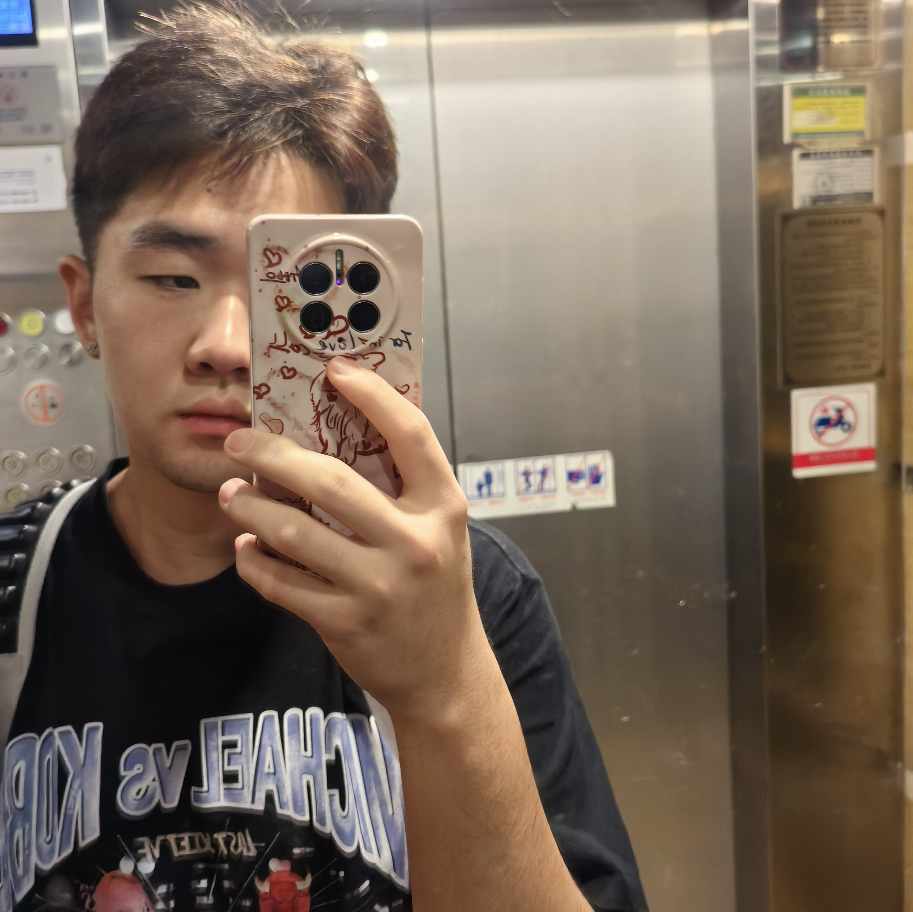
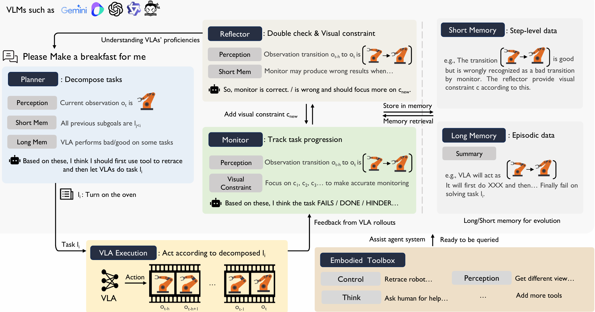

Wencong Zhang (Vincent)
Hello! I am Wencong Zhang, you can also call me Vincent. I am an incoming Ph.D. student (Fall 2026) at the University of Hong Kong, working at the OpenDriveLab. I am highly fortunate to be supervised by Prof. Hongyang Li, and co-advised by Prof. Ping Luo and Prof. Yi Ma. I am currently working on Embodied AI, Humanoid Loco-Manipulation, and end-to-end Vision-Language-Action models.
Research Interest: Embodied AI, Humanoid Loco-Manipulation, End-to-End Vision-Language-Action Models, Machine Learning, Generalist Agents
Interned: THU AIR, Kinetix AI
Email: vincentzz317 [AT] gmail.com

Publications
In submission
This paper proposes a robotic reinforcement learning framework that leverages a Compositional World Model—factorizing simulation into a controllable multi-view dynamics model and a progress value model—to continuously generate imaginary rollouts and compute advantages for stable, closed-loop policy self-improvement without physical environment interactions.
@article{yang2026rise,
title={RISE: Self-Improving Robot Policy with Compositional World Model},
author={Yang, Jiazhi and Lin, Kunyang and Li, Jinwei and Zhang, Wencong and Lin, Tianwei and Wu, Longyan and Su, Zhizhong and Zhao, Hao and Zhang, Ya-Qin and Chen, Li and Luo, Ping and Yue, Xiangyu and Li, Hongyang},
journal={arXiv preprint arXiv:2602.11075},
year={2026}
}

New In ML @ ICML 2025 Workshop
This paper proposes an embodied agent framework named PhysiAgent that incorporates monitor, memory, self-reflection mechanisms, and lightweight toolboxes to prompt VLMs to autonomously organize different components based on real-time proficiency feedback, effectively addressing grounding challenges in rigid sequential VLA-VLM structures.
@article{wang2025physiagent,
title={PhysiAgent: An Embodied Agent Framework in Physical World},
author={Wang, Zhihao and Li, Jianxiong and Zheng, Jinliang and Zhang, Wencong and Liu, Dongxiu and Zheng, Yinan and Niu, Haoyi and Yu, Junzhi and Zhan, Xianyuan},
journal={arXiv preprint arXiv:2509.24524},
year={2025}
}
Honors & Awards
- First Prize in China Robot Competition and RoboCup China Open Lead 2025
- Third Prize in RMUL, RoboMaster University League (Shandong) 2025
- Second Prize in China Robot Competition and RoboCup China Open 2024
Academic Services
- Reviewer, CVPR Workshop on Embodied AI in Life 2026